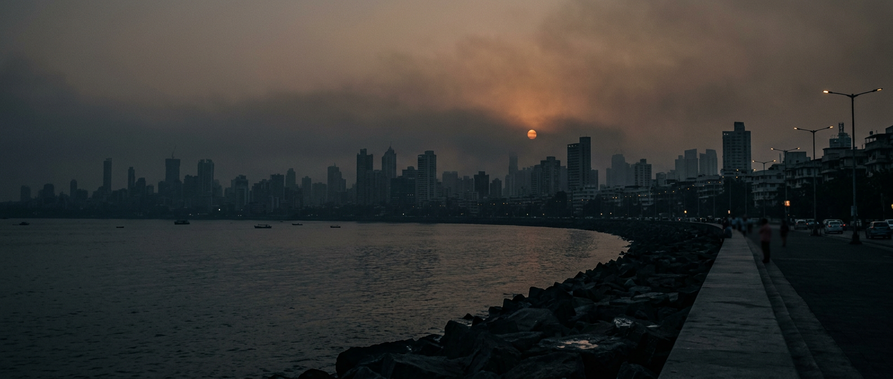

01
Pollution
Hourly PM2.5 from three periods
- 339,078 hourly readings
- 2019–2020, 2024, 2025–2026
CPCB/MPCB, XKDR and OpenAQ stations: the challenge's own data and its extra history.

Weather vs Humans Mumbai · Google Mumbai Data Challenge
A weather-only AI model predicts what Mumbai's air should have been. The gap is us.
Photo: Marine Drive at dusk, winter haze
Mumbai can't control the wind, the sea breeze or the monsoon. This page separates the smoke the weather made from the smoke people made, so the city can see what it can actually fix.
How it works
01
Pollution
CPCB/MPCB, XKDR and OpenAQ stations: the challenge's own data and its extra history.
02
Weather
From Open-Meteo/ERA5: wind speed and direction, boundary layer height (how high the air can mix), rain, temperature and humidity, plus their 6–240 hour histories and the land-breeze share.
03
Model
It sees only weather, station and hour of day, never dates or festivals. Each year is predicted by a model that never saw that year.
04
The gap
A positive value means more smoke than the weather explains.
Chapter 1 · The crackdown test
Average of the 4 challenge stations, 12 days before vs 12 days after 27 Nov 2025.
On 27 Nov 2025 the BMC put GRAP-4 into effect and issued stop-work notices to construction sites, including in Malad West, Mazgaon, Chakala and Deonar (The Hindu, 15 Dec 2025; HT, 2 Dec 2025). GRAP-4 was revoked on 1 Dec 2025. The BMC credited both enforcement and better winds.
µg/m³. So the weather wasn't what cleared the air.
This is strong evidence, not proof. Other things also changed in those weeks.
Chapter 2 · Three Diwalis
Diwali day ±2 days. The extra is actual minus weather-expected, compared with the network's usual gap in the surrounding weeks.
| Diwali | Extra per day | Per person, window | Stations |
|---|---|---|---|
| 2019 27 Oct | +7.1 µg/m³ | ~2 cigarettes | 10 |
| 2024 1 Nov | +23.6 µg/m³ | ~5 cigarettes | About 25 |
| 2025 Around 20–21 Oct | +44.8 µg/m³ | ~8 cigarettes | 4 · peak city day 21 Oct at 124.1 µg/m³ |
| 2026 8 NovComing | — | — | Added when the challenge data update lands on 10 Nov 2026 |
Each year uses a different set of stations, so the trend is indicative.
Chapter 3 · The human meter
Marked: the week of Diwali (21 Oct 2025) and the week GRAP-4 began (27 Nov 2025). Through most of 2025, actual sat above weather-expected. From December 2025 through October 2026, it mostly sat at or below.
That's a hopeful sign that the gains held, but not proof: sensor or model drift could also play a part.
Breath debt · the human part
Per station, Feb 2025 to Oct 2026, about 20 months.
| Station | Days pushed over the limit | Human-made extra |
|---|---|---|
| Shivaji Nagar | 56 of 61 | ~218 cigarettes |
| Malad West | 38 of 46 | ~113 cigarettes |
| Borivali East | 50 of 56 | ~110 cigarettes |
| Byculla | 39 of 43 | ~97 cigarettes |
Days over India's 60 µg/m³ daily limit that the weather alone would have kept under it. Cigarettes use Berkeley Earth's rule of thumb: 22 µg/m³ for one day ≈ 1 cigarette, approximate.
Mumbai already has forecasts (SAFAR, IITM's early warning system) and source-apportionment tools (IITM's Decision Support System). Researchers have "de-weathered" city-wide trends.
This page asks something else: did a policy or festival really change the air, once the weather is taken out? It also includes a placebo test anyone can rerun.
Only 4 to 25 monitors per year, not ward level. The station networks differ by year.
The model explains about 57% of daily city variation, so multi-day windows are more reliable than single days.
The whole city shares a single weather location.
Cigarette equivalents are a rough public-health shorthand. Correlation isn't causation.
Zindi Google Mumbai Data Challenge (CPCB/CAAQMS, OpenAQ, XKDR).
A notebook for Google Colab. Link coming
Aaryan Singh Zindi: aaryan_thakur69